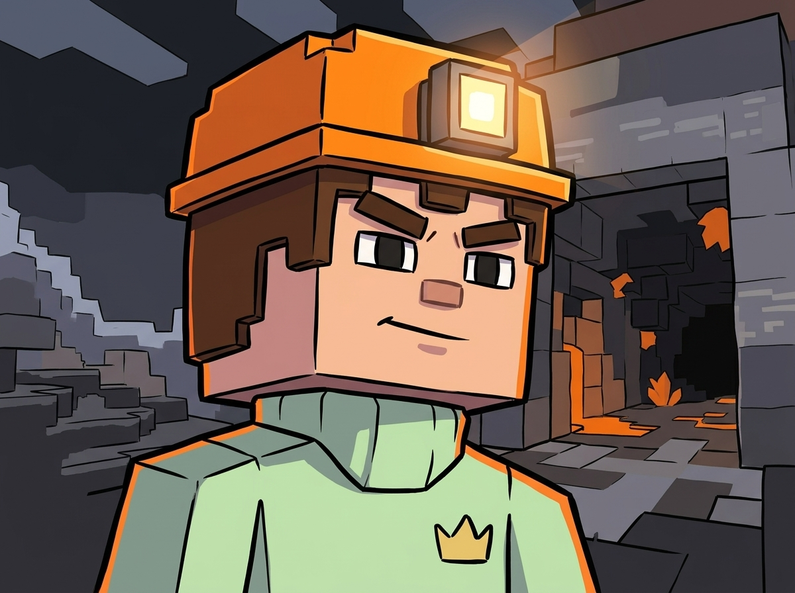
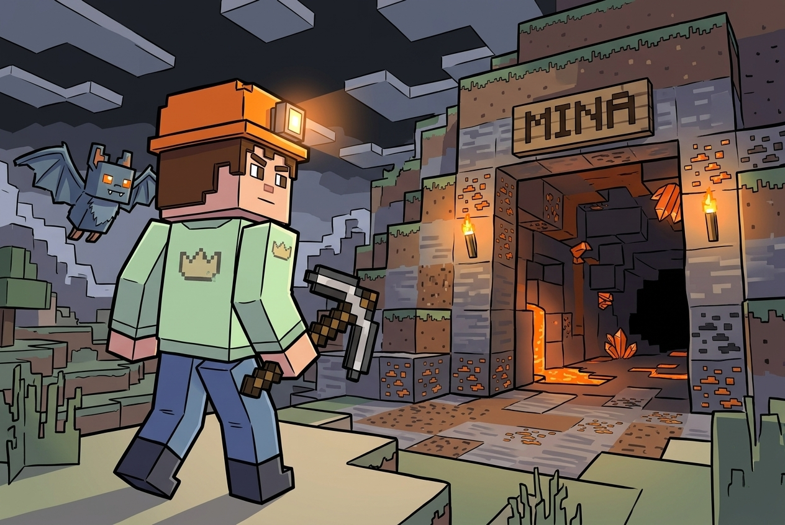
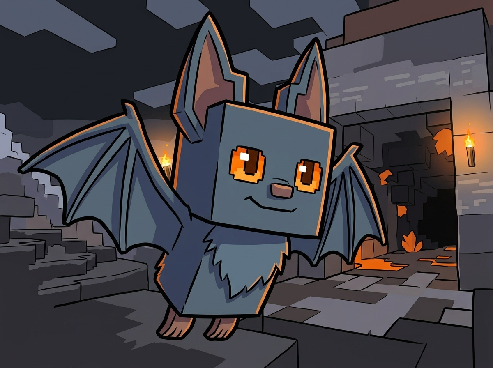
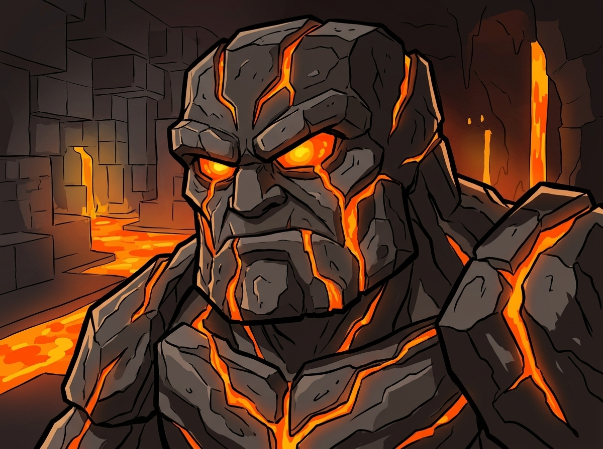
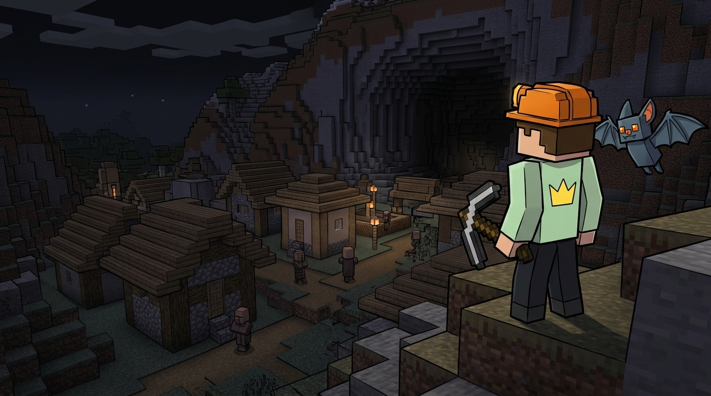
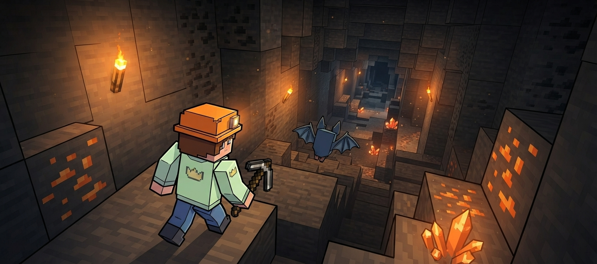
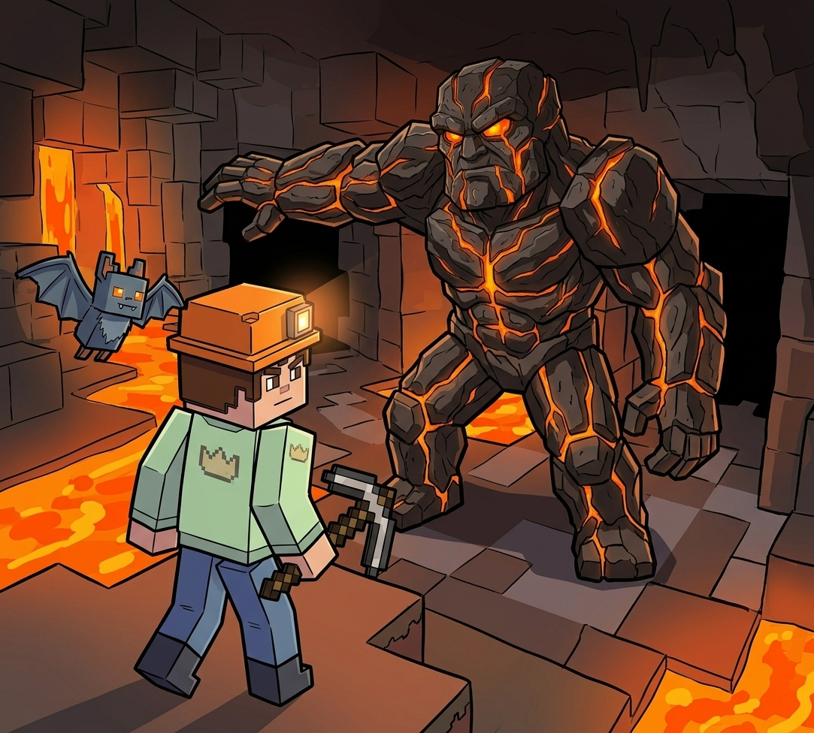
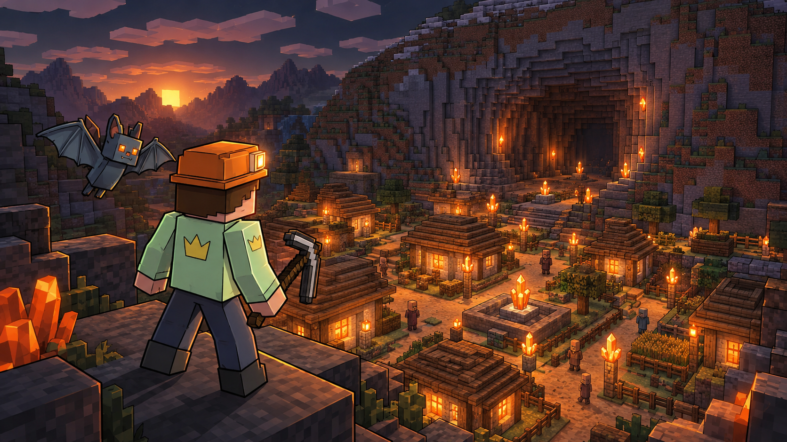

ROCCO
El minero
Protagonista, joven minero valiente y terco de la aldea Piedra Hueca. Siempre lleva puesto su casco naranja y su fiel pico de hierro.

CAPÍTULO 0
Acompaña a Rocco y a su guía Nox en una aventura hacia lo más profundo de la mina de Piedra Hueca para salvar a su aldea de la oscuridad eterna.
► COMENZAR AVENTURA
El minero
Protagonista, joven minero valiente y terco de la aldea Piedra Hueca. Siempre lleva puesto su casco naranja y su fiel pico de hierro.

El murciélago guía
Compañero e inseparable guía de Rocco. Un murciélago de cueva de pelaje gris azulado y brillantes ojos color naranja que conoce cada rincón subterráneo.

Guardián de la cueva de lava
Gigante imponente hecho de roca volcánica y grietas de lava encendida. Protege la entrada al Corazón Naranja y pone a prueba a quienes intentan pasar.
CAPÍTULO 1
Una noche en la aldea Piedra Hueca, las luminosas lámparas de cristal que iluminaban cada hogar parpadearon y comenzaron a apagarse una por una, sumiendo todo en penumbras. El anciano de la aldea recordó la antigua leyenda del Corazón Naranja, una joya ancestral escondida en las profundidades de la cueva.
Sin dudarlo, Rocco tomó su casco naranja y su pico. Decidido a devolver el brillo a su pueblo, se adentró en la entrada principal de la mina acompañado por el fiel Nox.
CONTINUAR →

CAPÍTULO 2
El aire se volvía cada vez más cálido a medida que descendían por oscuros túneles hechos de bloques cuadrados. Las antorchas en las paredes apenas iluminaban las vetas de carbón y los cristales naranja opacos que decoraban el camino.
Nox volaba al frente indicando los obstáculos en el suelo. Antes de continuar al nivel más profundo, Rocco revisó cuidadosamente que llevaba todo su equipamiento básico:

CAPÍTULO 3
Al llegar al fondo de la cueva, un rugido ensordecedor retumbó entre los bloques de piedra. Un enorme Guardián de Lava emergió de un río incandescente bloqueando el camino. "Solo quien elija el túnel correcto demostrará tener la valentía para alcanzar la luz", resonó la voz del gigante.
Elige un túnel para continuar la aventura...

¡MISIÓN CUMPLIDA!
El Guardián de Lava reconoció la valentía de Rocco y se apartó amablemente. Al tocar el Corazón Naranja, una intensa ráfaga de luz dorada recorrió cada túnel hasta emerger en la superficie, encendiendo nuevamente todas las lámparas de la aldea Piedra Hueca. Rocco fue nombrado el nuevo Guardián de la Mina, listo para proteger siempre el brillo de su hogar.
↑ VOLVER AL INICIO